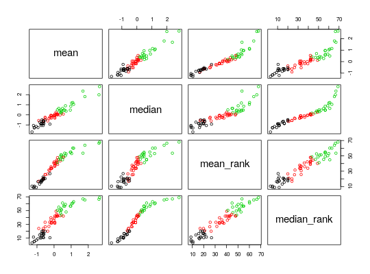

Calculate_TRI calculates the Titer Response Index (TRI)
Calculate_TRI(dat_list, subjectCol = "SubjectID", discretize = c(0.2, 0.3), responseLabels = paste0(c("low", "moderate", "high"), "Responder"), na_action = "na.fail", ...)
| dat_list | a named list like the one returned by |
|---|---|
| subjectCol | the name of the column specifying a subject ID. Default is "SubjectID". |
| discretize | a vector of quantiles in (0, 0.5] specifying where to make the cutoff for low, moderate and high responses. Default is 20% and 30%. |
| responseLabels | names for low, moderate and high responses |
| na_action | how should missing |
| ... | Additional arguments passed to |
Calculates the Titer Response Index (TRI) defined in Bucasas et al. 2011
Missing (NA) values are handled by being returned as missing in the
endpoints in the output
Bucasas KL, et al. (2011) Early patterns of gene expression correlate with the humoral immune response to influenza vaccination in humans. J Infect Dis 203(7):921-9.
lm
#>#>## Calculate the titer response index (TRI) endpoints <- Calculate_TRI(titer_list) summary(endpoints)#> Length Class Mode #> models 3 -none- list #> residualMatrix 207 -none- numeric #> scores 4 data.frame list #> TRI 69 -none- numeric #> TRI_d20 69 factor numeric #> TRI_d30 69 factor numeric## Get discrete endpoints using upper/lower 30% endpoints$TRI_d30#> 110191 110192 110193 110194 #> moderateResponder lowResponder moderateResponder lowResponder #> 110195 110196 110197 110198 #> moderateResponder lowResponder highResponder moderateResponder #> 110199 110200 110201 110202 #> lowResponder highResponder moderateResponder moderateResponder #> 110203 110204 110205 110207 #> moderateResponder moderateResponder highResponder lowResponder #> 110208 110209 110210 110211 #> lowResponder lowResponder lowResponder moderateResponder #> 110212 110213 110214 110215 #> moderateResponder moderateResponder lowResponder lowResponder #> 110216 110241 110242 110243 #> highResponder moderateResponder moderateResponder lowResponder #> 110244 110245 110247 110248 #> highResponder highResponder highResponder moderateResponder #> 110250 110251 110252 110253 #> moderateResponder highResponder moderateResponder highResponder #> 110254 110255 110256 110257 #> moderateResponder highResponder highResponder highResponder #> 110258 110259 110260 110261 #> moderateResponder highResponder lowResponder highResponder #> 110262 110263 110264 110265 #> moderateResponder moderateResponder lowResponder highResponder #> 110266 110267 110268 110269 #> highResponder highResponder highResponder highResponder #> 110270 110271 110272 110273 #> moderateResponder moderateResponder highResponder moderateResponder #> 110274 110275 110276 110277 #> lowResponder lowResponder moderateResponder highResponder #> 110278 110279 110280 110281 #> lowResponder lowResponder moderateResponder lowResponder #> 110282 110283 110284 110285 #> moderateResponder moderateResponder lowResponder lowResponder #> 110286 #> lowResponder #> Levels: lowResponder moderateResponder highResponder## Recreate Supp. Fig. S1 pairs(endpoints$scores, col = endpoints$TRI_d30)